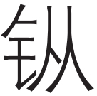

欧阳修
欧阳子方夜读书[1]，闻有声自西南来者。悚然而听之[2]，曰：“异哉！”初淅沥以萧飒[3]，忽奔腾而砰湃[4]；如波涛夜惊，风雨骤至。其触于物也，铮铮[5]，金铁皆鸣；又如赴敌之兵，衔枚疾走[6]，不闻号令，但闻人马之行声。予谓童子：“此何声也？汝出视之。”童子曰：“星月皎洁，明河在天[7]，四无人声，声在树间。”
予曰：“噫嘻[8]，悲哉！此秋声也。胡为乎来哉？”
盖夫秋之为状也，其色惨淡，烟霏云敛[9]；其容清明，天高日晶；其气栗冽[10]，砭人肌骨[11]；其意萧条，山川寂寥。故其为声也，凄凄切切，呼号愤发。丰草绿缛而争茂[12]，佳木葱茏而可悦[13]。草拂之而色变[14]，木遭之而叶脱。其所以摧败零落者，乃一气之余烈[15]。夫秋，刑官也[16]，于时为阴[17]；又兵象也[18]，于行为金[19]。是谓天地之义气[20]，常以肃杀而为心。天之于物，春生秋实，故其在乐也，商声主西方之音[21]，夷则为七月之律[22]。商，伤也，物既老而悲伤；夷，戮也，物过盛而当杀。
“嗟夫！草木无情，有时飘零。人为动物，惟物之灵。百忧感其心，万物劳其形，有动于中，必摇其精。而况思其力之所不及，忧其智之所不能，宜其渥然丹者为槁木[23]，黟然黑者为星星[24]。奈何以非金石之质，欲与草木而争荣？念谁为之戕贼[25]，亦何恨乎秋声！”
童子莫对，垂头而睡。但闻四壁虫声唧唧，如助予之叹息。
[1]欧阳子：欧阳修自称。方：刚刚。
[2]悚（sǒng）：吃惊而严肃的样子。
[3]淅沥：形容雨声。萧飒：风夹雨声。
[4]砰湃：同“澎湃”。
[5]（cōng）铮铮（zhēng）：象声词，金属物相互撞击声。
[6]枚；形状如同筷子的木片。古代行军，士兵含口中，避免说话。
[7]明河：即银河，也称天河。
[8]噫嘻：感叹声。
[9]烟霏云敛：烟消云散之意。霏：通“飞”。敛：收敛。
[10]栗冽：同“凛冽”，寒冷。
[11]砭：古代用来治病的石针。此处是刺的意思。
[12]绿缛：绿草茂密。
[13]葱茏：青翠昌盛。
[14]拂之：青草被秋气吹拂过之后。
[15]气：指秋气，秋天的风。
[16]刑官：即司寇。古代掌刑狱、纠察之官。古人将职官与天地四时相配，司寇称秋官，取其杀戮之意。
[17]于时为阴：古代有阴阳五行理论，秋冬阴气重，故为阴。
[18]兵象：用兵的征象。古代练兵、征伐多在秋天。
[19]于行为金：五行与四季对应，秋天属金，于色为白。
[20]天地之义气：《礼记·乡饮酒义》说：天地肃杀之气，始于西南方，到西北方为极盛。这正是秋的方位。
[21]商声：五音与五行相配，商属金，秋属金，西方属金，故云。
[22]夷则为七月之律：夷则是七月的音律。古音分十二律，即十二个高度不同的标准音。十二律和十二月联系起来，夷则配七月。
[23]渥然丹者：红扑扑的面容。槁木：枯槁的树皮，比喻人衰老之皮肤。
[24]黟（yī）然黑者：指乌黑的头发。星星：鬓发花白。
[25]戕（qiāng）贼：害人之贼。
【译文】
欧阳先生刚刚开始夜里读书，忽然听到有声音从西南方向传来，心里不禁悚然，仔细一听，吃惊道：“奇怪啊！”这声音初听时像淅淅沥沥的雨声，其中还夹杂着萧萧飒飒的风吹树木声，然后忽然变得汹涌澎湃起来，像是江河夜间波涛突起、风雨骤然而至。碰到物体上发出铿锵之声，又好像是金属撞击的声音，又像是奔赴战场的军队，人和马都含枚匆匆急行军，听不到任何号令，只听见人马行进之声音。于是我对童子说：“这是什么声音？你出去看看。”童子回答说：“月色皎皎，星光灿烂，浩瀚银河，高悬中天，四下里悄无人声，声音来自树林之间。”
我感叹道：“唉，可悲啊！这就是秋声！它为何而来呢？
“大体来说，秋天的性状是这样的：它的色调凄惨暗淡，烟飞云收；它的形貌清新明净，天空高远而日色明亮；它的气候寒冷，刺人肌骨；它的意境萧条，山水寂寞冷落而没有生气。所以它发出的声音凄凄切切，呼号迅猛，不可遏止。绿草浓密丰美，争相繁茂，树木青翠茂盛而使人快乐。然而，一旦秋风吹起，拂过草地，草就要变色；掠过森林，树就要落叶。它所用来折断枝叶，凋落花草而使树木凋零的，便是一种构成天地万物的秋气。秋天是刑官之季节，在季节上属于阴；秋天有用兵的象征，在五行上属于金。这就是常说的天地之严凝之气，常常以肃杀为意志。天对于万物，是要它们在春天生长，在秋天结实。所以，秋天在音乐的五声中又属商声。商声是西方之声，夷则是七月的曲律之名。商，也就是‘伤’的意思，万物衰老，都会悲伤。夷，是杀戮的意思，草木过繁盛期就应该衰亡。
“唉！草木是无情之物，依照季节而衰败飘零。人为动物，在万物中又最有灵性，无穷无尽的忧虑煎熬他的心绪，无数琐碎烦恼的事来劳累他的身形。只要内心被外物所触动，就一定会扬动心中的精气。更何况常常思考自己的力量所做不到的事情，忧虑自己的智慧所不能解决的问题，自然会使他红润的面色变得苍老枯槁，乌黑的头发变得鬓发花白。为什么还要以并非金石的肌体，去像草木那样争一时之荣？人应当仔细考虑究竟是谁给自己带来这么多残害，又何必去怨恨这秋声？”
书童没有应答，低头沉沉睡去。只听得四壁虫鸣唧唧，像在附和我的叹息。
【评析】
本文写于作者五十三岁时。欧阳修晚年地位较高，但回首往事，屡次无辜被诬陷而遭贬，内心隐痛难消。面对朝廷内外之污浊黑暗，眼见国家日益衰弱，改革无望，不免心情郁闷。因此借一阵秋风经过时的声音而抒发其对人生短暂，大化无情的感伤。同时也借秋声告诫世人：不必悲秋、恨秋，怨天尤地，而应自我反省。这一立意，抒发了作者难有所为的郁闷心情，以及自我超脱的愿望。
这篇赋以“有声之秋”与“无声之秋”的对比作为基本结构框架，精心布局，文势一气贯串而又曲折变化。开头一句用博喻的手法描摹一阵秋风经过自己住处时的声音效果。仔细分析，这是一段写实的文字。“初淅沥以萧飒，忽奔腾而砰湃；如波涛夜惊，风雨骤至。其触于物也，铮铮，金铁皆鸣；又如赴敌之兵，衔枚疾走，不闻号令，但闻人马之行声。”开始声音很小，逐渐增大，到自己家时吹动屋檐上的铁马而发出金属之声，然后又开始变小，渐渐消失。这是极其精妙的文字，将一阵秋风之声音动态通过想象和比喻写得如此生动逼真，是绝大本领。从凄切悲凉的秋声起笔，为下文铺写“有声之秋”蓄势；然后由草木经秋而摧败零落，写到因人事忧劳而使身心受到戕残，由自然界转到社会人生，这是“无声之秋”；最后归结出全篇主旨：“念谁为之戕贼，亦何恨乎秋声！”